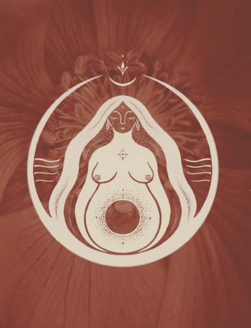
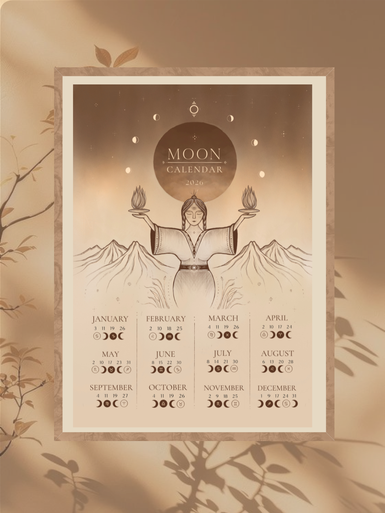

Illustration
Seasonal Illustration, botanical artwork, and commissioned pieces.
My artwork is an ongoing conversation with the seasons, the body, and the subtle world. Pieces move between print, digital, and ceremony.
Working remotely across New Zealand, Australia, and internationally.
Overview
Illustration with depth and detail
My Illustration work is rooted in an intimate relationship with nature and the body. I create original pieces, calendars, and commissions for brands, books, and personal spaces.
Best for values-led clients who want timeless, handcrafted imagery rather than fast trends.

What's available
Ways the artwork shows up
Seasonal posters
Earth-based maps of plant allies, lunar rhythms, and seasonal tides.
- Illustrated maps with hand-drawn notes
- Print and digital versions
- Rooted in Aotearoa's seasons
Botanical illustration
Detailed studies of plants and flowers created for print or packaging.
- Single plants or layered arrangements
- Ink, pencil, or digital mediums
- Available as commissions
Custom commissions
Symbolic pieces for ceremonies, retreats, and personal milestones.
- Collaborative discovery
- Delivered print-ready and digital
- Flexible formats and sizing
Process
How commissions work
1. Intention
We clarify the story, format, and feeling you want the piece to carry.
2. Sketching
I share initial concepts and refine with your feedback.
3. Illustration
The final artwork is brought to life with care and detail.
4. Delivery
Receive print-ready files, with shipping options if needed.
Gallery
Snapshots from the studio
Illustration pieces from seasonal collections, calendars, and commissions.

Forest guardian

Moon calendar

Cycle of seasons

Floral symbol

Lunar map
Next step
Commission artwork
Share your timeline, format, and what you are imagining. I will reply with availability and a gentle fit check.
Request a commission